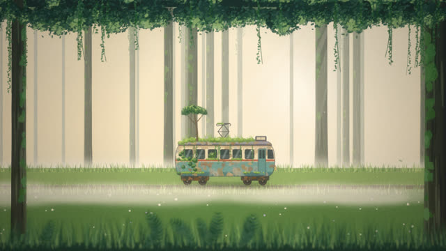
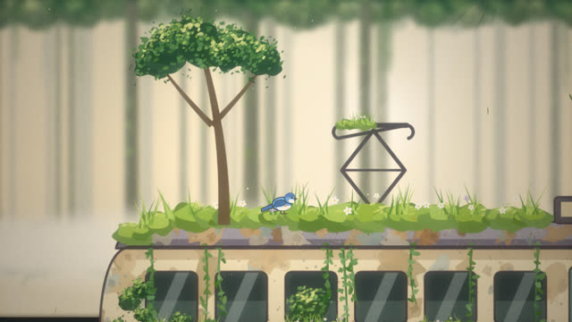
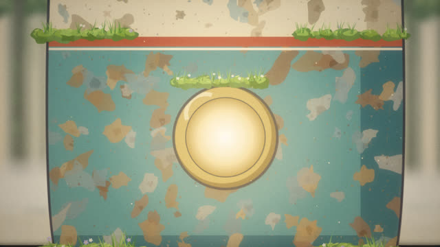
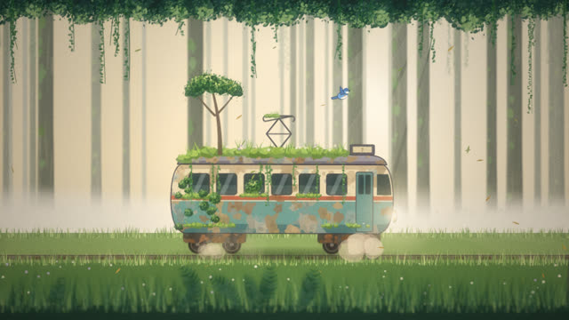
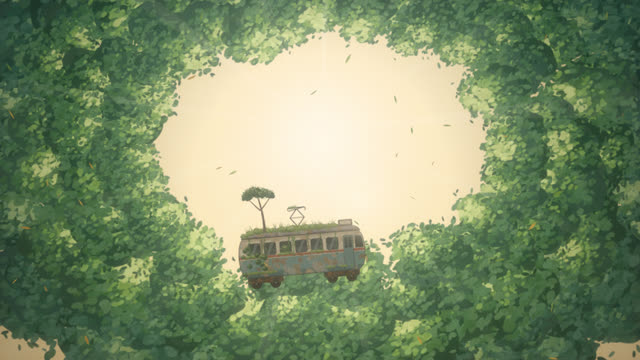
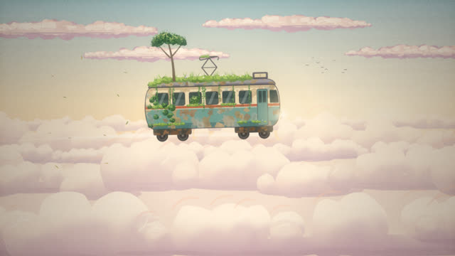
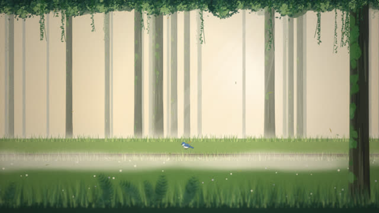
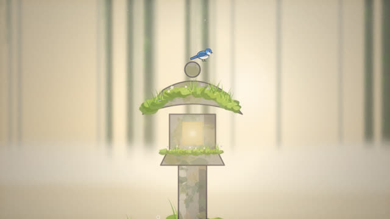

작업 흐름
- 입력
- 주제 하나(낡은 전차, 등대, 풍차, 돌로 된 고래 …). 레퍼런스 영상이 있으면 그 스틸
- 이야기
- 잠든 주인공 · 장소 · 작은 목격자 · 깨어나는 순간으로 바꾼 6–9샷 표(전경 → 접근 → 디테일 → 목격자 → 전환 → 상승 → 하늘 → 고요한 귀환)
- 그림
- 빌드 때 한 번 칠하는 배경 판: 그러데이션 하늘과 분홍 구름띠, 잎 터치로 쌓은 숲, 깊이마다 다른 공기, 셀 색 · 녹 · 먹선 · 이끼의 주인공
- 확인
- 절반 크기 스틸과 콘택트 시트, 모든 샷이 그려지는지 · 빈 프레임 · 결정성 · 장면 규칙(새가 지붕 위) · 악보 검사
- 출력
- 30fps 1920×1080 MP4(코드로 합성한 음악 · 효과음 WAV 포함), ♪ 버튼으로 소리까지 재생하는 라이브 페이지
cd painted-anime-short/examples/last-tram
node ../../scripts/render.mjs index.html --sheet 24 --scale .5
node ../../scripts/check.mjs index.html
node ../../scripts/score.mjs score.js --dur 48 --out out/last-tram.wav
node ../../scripts/render.mjs index.html --workers 4 --audio out/last-tram.wav
node ../../scripts/new-film.mjs ../../../my-film요구 사항: Node + Playwright Chromium, ffmpeg. 네트워크와 GPU가 필요 없습니다(CPU에서 1080p 한 프레임 약 0.2초, 48초 영상을 워커 4개로 약 7분). 단계별 순서는 SKILL.md에 있습니다.
샘플
예제 「The Last Tram」의 여덟 샷과 시작 템플릿입니다. 카드를 누르면 새 탭에서 그 순간에 멈춘 장면이 열리고, 브라우저가 붓 터치부터 직접 칠합니다.
The Last Tram 16:9 · 48초 · 8샷
새벽 숲 빈터에서 이끼에 덮여 잠든 낡은 전차에 파랑새가 내려앉고, 전조등이 깨어나 전차가 숲을 뚫고 구름 위로 떠납니다.
1 · 3초새벽의 숲
하늘 · 먼 숲 · 안개 · 가까운 숲 네 판을 다른 깊이로 밀어 들어가는 카메라, 날아가는 새떼

2 · 10초빈터의 전차
깊이마다 공기를 다르게 칠한 나무 세 겹, 빛줄기, 앞을 가리는 줄기와 잎 천장, 전차 아래 그림자

3 · 16.5초지붕 위의 파랑새
2.7배로 다시 칠한 같은 전차, 날아와 내려앉아 두리번거리는 새, 흐리게 칠한 배경(피사계 심도)

4 · 22.5초깨어나는 전조등
정면 근접용 페인터, 몇 번 깜빡인 뒤 켜지는 불빛과 반짝임, 떠다니는 먼지

5 · 27초몸을 떠는 전차
줄어드는 흔들림, 바퀴에서 피는 먼지, 떠나는 새, 쏟아지는 낙엽, 들리며 옅어지는 그림자

6 · 33초숲 지붕을 뚫고
하얀 섬광으로 넘어간 올려다보기 샷, 빛을 향해 안쪽 가장자리가 밝은 잎 고리, 솟아오르는 잎

7 · 38.5초구름 위
세 겹의 적운 바다가 다른 속도로 흐름, 바퀴의 빛 꼬리, 켜진 전조등, 흩날리는 잎

8 · 46초남은 것은 새 한 마리
첫 빈터와 같은 판, 선로에 내려앉는 새에게 천천히 다가가는 카메라, 페이드아웃

템플릿 · 12초석등templates/film.html
new-film.mjs가 복사하는 출발점. 새벽 숲, 빈터의 석등, 새가 내려앉고 불이 켜지는 3샷실제 작품
이 레포에서 만든 스킬입니다. Chetaslua가 X에 올린 코드만으로 만든 80초 단편(숲속에서 이끼 낀 기계가 깨어나 구름 위로 떠나는 영상)에서 화풍과 일반적인 기법(배경 판 겹치기, 잎 터치 숲, 셀 색 주인공, 깊이별 공기, 샷 구성, 필름 색감)만 빌려 예제 「The Last Tram」을 만들었고, 코드와 주인공, 이야기, 음악은 모두 이 레포의 것입니다.
링크
- SKILL.md 워크플로
- 폴더 lib · scripts · templates · references · examples
- README.md 빠른 시작
- references/STORY.md 주제를 샷 표로 바꾸는 법, 샷 문법, 타이밍
- references/LOOK.md 손그림으로 보이게 하는 것, 팔레트, 레이어 순서, 붓 크기, 색감
- references/KIT.md 엔진 · 붓 · 페인터 · 악보 API, 주인공 그리기
- references/LESSONS.md 겪은 문제와 해결